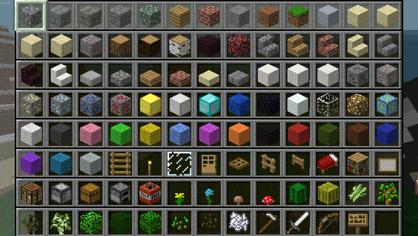
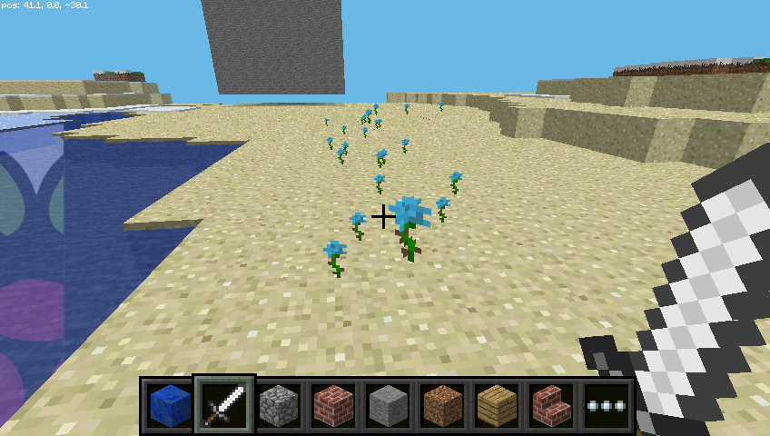

Minecraft Pi
Minecraft ist ein beliebtes Game, bei dem man in einer offenen Welt aus Blöcken alles mögliche bauen kann. Eine Gratisversion davon ist für den Raspberry Pi verfügbar. Im Gegensatz zur normalen Version ist es möglich, Minecraft Pi von aussen zu programmieren. Das heisst, dass du mit der Programmiersprache Python Befehle schreiben kannst, um z.B. automatisch ganze Gebäude zu bauen. Es ist eine super Möglichkeit um Python zu lernen.

Installation
Seit September 2014 ist Minecraft Pi auf allen Raspberry Pis vorinstalliert.

Falls du noch eine ältere Version nutzt, öffne ein Terminal-Fenster und tippe folgende Befehle ein (du musst dazu Internetzugang haben):
sudo apt-get update
sudo apt-get install minecraft-piSobald die Verarbeitung abgeschlossen ist, sollte Minecraft installiert sein.
Starten
Um Minecraft zu starten, doppelklicke auf das Desktopsymbol oder gib minecraft-pi in einem Terminal-Fenster ein.

Sobald Minecraft Pi geöffnet ist, klicke auf Start Game
When Minecraft Pi has loaded, click on Start Game, followed by Create new. You'll notice that the containing window is offset slightly. This means to drag the window around you have to grab the title bar behind the Minecraft window.

You are now in a game of Minecraft! Go walk around, hack things, and build things!
Use the mouse to look around and use the following keys on the keyboard:
| Key | Action |
|---|---|
| W | Forward |
| A | Left |
| S | Down |
| D | Right |
| E | Inventory |
| Space | Jump |
| Double Space | Fly / Fall |
| Esc | Pause / Game menu |
| Tab | Release mouse cursor |
You can select an item from the quick draw panel with the mouse's scroll wheel (or use the numbers on your keyboard), or press E and select something from the inventory.

You can also double tap the space bar to fly in to the air. You'll stop flying when you release the space bar and if you double tap it again you'll fall back to the ground.

With the sword in your hand you can click on blocks in front of you to remove them (or to dig) and with a block in your hand you can use right click to place that block in front of you, or left click to remove a block.
Programming interface
With Minecraft running, and the world created, bring your focus away from the game by pressing the Tab key, which will free your mouse. Open IDLE (not IDLE3) on the Desktop and move the windows so they're side-by-side.
You can either type commands directly in to the Python window or create a file so you can save your code and run it again another time.
If you want create a file go to File > New window and File > Save. You'll probably want to save this in your home folder or a new project folder.
Start by importing the Minecraft library, creating a connection to the game and testing it by posting the message "Hello world" to the screen:
from mcpi import minecraft
mc = minecraft.Minecraft.create()
mc.postToChat("Hello world")If you're entering commands directly in to the Python window, just hit Enter after each line. If it's a file, save with Ctrl + S and run with F5. When your code runs, you should see your message on screen in the game.

Find your location
To find your location, type:
pos = mc.player.getPos()pos now contains your location; access each part of the set of coordinates with pos.x, pos.y and pos.z.
Alternatively, a nice way to get the coordinates into separate variables is to use Python's unpacking technique:
x, y, z = mc.player.getPos()Now x, y, and z contain each part of your position coordinates. x and z are the walking directions (forward/back and left/right) and y is up/down.
Note that getPos() returns the location of the player at the time, and if you move position you have to call the function again or use the stored location.
Teleport
As well as finding out your current location you can specify a particular location to teleport to.
x, y, z = mc.player.getPos()
mc.player.setPos(x, y+100, z)This will transport your player to 100 spaces in the air. This will mean you'll teleport to the middle of the sky and fall straight back down to where you started.
Try teleporting to somewhere else!
Set block
You can set blocks at a given set of coordinates with mc.setBlock():
x, y, z = mc.player.getPos()
mc.setBlock(x+1, y, z, 1)Now a stone block should appear beside where you're standing. If it's not immediately in front of you it may be beside or behind you. Return to the Minecraft window and use the mouse to spin around on the spot until you see a grey block directly in front of you.

The arguments passed the set block are x, y, z and id. The (x, y, z) refers to the position in the world (we specified one block away from where the player is standing with x + 1) and the id refers to the type of block we'd like to place. 1 is stone.
Other blocks you can try:
Air: 0
Grass: 2
Dirt: 3Now with the block in sight, try changing it to something else:
mc.setBlock(x+1, y, z, 2)You should see the grey stone block change in front of your eyes!

Blocks as variables
You can use a variable to store an ID to make the code more readable. The IDs are retrievable through block:
dirt = block.DIRT.id
mc.setBlock(x, y, z, dirt)Or if you know the ID, you can just set it directly:
dirt = 3
mc.setBlock(x, y, z, dirt)Special blocks
There are some blocks which have extra properties, such as Wool which has an extra setting you can specify the colour. To set this use the optional fourth parameter in setBlock:
wool = 35
mc.setBlock(x, y, z, wool, 1)Here the fourth parameter 1 sets the wool colour to orange. Without the fourth parameter it is set to the default (0) which is white. Some more colours are:
2: Magenta
3: Light Blue
4: YellowTry some more numbers and watch the block change!
Other blocks which have extra properties are wood (17): oak, spruce, birch, etc; tall grass (31): shrub, grass, fern; torch (50): pointing east, west, north, south; and more. See the API reference for full details.
Set blocks
As well as setting a single block with setBlock you can fill in a volume of space in one go with setBlocks:
stone = 1
x, y, z = mc.player.getPos()
mc.setBlocks(x+1, y+1, z+1, x+11, y+11, z+11, stone)This will fill in a 10 x 10 x 10 cube of solid stone.
You can create bigger volumes with the setBlocks function but it may take longer to generate!
Dropping blocks as you walk
The following code will drop a flower behind you wherever you walk:
from mcpi import minecraft
from time import sleep
mc = minecraft.Minecraft.create()
flower = 38
while True:
x, y, z = mc.player.getPos()
mc.setBlock(x, y, z, flower)
sleep(0.1)Now walk forward for a while and turn around to see the flowers left behind.

Since we used a while True loop this will go on forever. To stop it, hit Ctrl + C in the Python window.
Try flying through the air and see the flowers you leave in the sky:

What if we only wanted to drop flowers when the player walks on grass? We can use getBlock to find out what type a block is:
x, y, z = mc.player.getPos() # player position (x, y, z)
this_block = mc.getBlock(x, y, z) # block ID
print(this_block)This tells you the location of the block you're standing in (this will be 0 - an air block). We want to know what type of block we're standing on. For this we subtract 1 from the y value and use getBlock() to determine what type of block we're standing on:
x, y, z = mc.player.getpos() # player position (x, y, z)
block_beneath = mc.getBlock(x, y-1, z) # block ID
print(block_beneath)This tells us the ID of the block the player is standing on.
Test this out by running a loop to print the block ID of whatever you're currently standing on:
while True:
x, y, z = mc.player.getPos()
block_beneath = mc.getBlock(x, y-1, z)
print(block_beneath)
We can use an if statement to choose whether or not we plant a flower:
grass = 2
flower = 38
while True:
x, y, z = mc.player.getPos() # player position (x, y, z)
block_beneath = mc.getBlock(x, y-1, z) # block ID
if block_beneath == grass:
mc.setBlock(x, y, z, flower)
sleep(0.1)Perhaps next we could turn the tile we're standing on in to grass if it isn't already:
if block_beneath == grass:
mc.setBlock(x, y, z, flower)
else:
mc.setBlock(x, y-1, z, grass)Now we can walk forward and if we walk on grass, we'll leave a flower behind. If it's not grass, it turns in to grass. Then when we turn around and walk back, we leave a flower behind as it's now grass.

TNT blocks
Another interesting block is TNT! To place a normal TNT block use:
tnt = 46
mc.setBlock(x, y, z, tnt)
However this TNT block is fairly boring. Try applying data as 1:
tnt = 46
mc.setBlock(x, y, z, tnt, 1)Now use your sword and left click the TNT block - it will be activated and will explode in a matter of seconds!
Now try making a big cube of TNT blocks!
tnt = 46
mc.setBlocks(x+1, y+1, z+1, x+11, y+11, z+11, tnt, 1)
Now you'll see a big cube full of TNT blocks. Go and activate one of the blocks and then run away to watch the show! It'll be really slow to render the graphics as so many things are changing at once.

Networked game
If multiple people connect Raspberry Pis to a local network they can join the same Minecraft world and play together. Players can see each other in the Minecraft world.
API reference
For a more extensive documentation of functions and a full list of block IDs see an API reference at stuffaboutcode.com.
Note: Minecraft was previously installed by downloading the files with wget. These instructions has been updated as the installation is now possible with Raspbian's package manager.
Previously any Python code accessing the API had to be saved in the api/python folder. Now you can save the Python code wherever you like.
If you installed Minecraft the old way, you should delete the folder with rm -rf mcpi from the home folder, and follow the instructions above to install the new way.